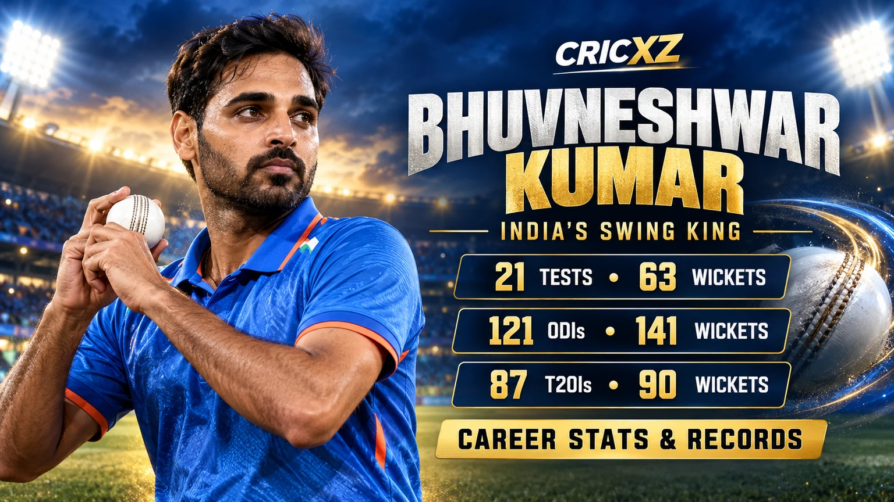
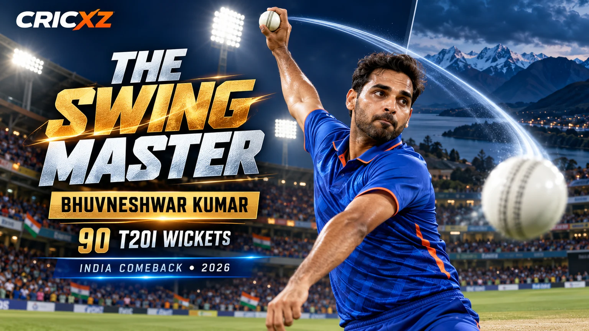

Test Career
- Matches
- 21
- Wickets
- 63
- Bowling average
- 26.10
- Economy rate
- 2.95
- Best bowling
- 6/82
- Five-wicket hauls
- 4
- Four-wicket hauls
- 3
- Bowling strike rate
- 53.14

Bhuvneshwar Kumar has taken 295 international wickets across 21 Tests, 121 ODIs and 87 T20Is. Renowned for late movement and new-ball control, he returned to India's T20I squad in October 2026 after an absence of almost four years.
Career statistics are current through 8 October 2026.
Bhuvneshwar has been recalled to India's T20I squad but has not yet played in the New Zealand series, so his international figures remain unchanged from his previous appearance in November 2022.
Across the three international formats, Bhuvneshwar has taken 295 wickets. His career has been defined by seam presentation, late swing, powerplay accuracy and the development of slower balls and yorkers for the closing overs.

Bhuvneshwar's previous international appearance came in the T20I against New Zealand at Napier on 22 November 2022. The BCCI subsequently named him in India's squad for the five-match New Zealand T20I tour beginning on 22 October 2026.
Read the complete squad context in CricXZ's report on Bhuvneshwar Kumar's return to India's T20I side.
Bhuvneshwar's peak Test performance came at Lord's in 2014, where he took 6/82 during India's historic victory. He finished the five-match England series with 19 wickets and also contributed three half-centuries with the bat.
The campaign demonstrated why his skill set was valuable beyond helpful home conditions: he could challenge both edges of the bat while maintaining control for long spells.
22 February 2013 – 24 January 2018
Made his Test debut against Australia in Chennai. His latest Test appearance in this snapshot came against South Africa in Johannesburg.
30 December 2012 – 21 January 2022
Debuted against Pakistan in Chennai and bowled Mohammad Hafeez with his first delivery in ODI cricket.
25 December 2012 – 22 November 2022
Took 3/9 on debut against Pakistan in Bengaluru. His latest appearance came against New Zealand in Napier before his 2026 recall.
Combined Test, ODI and T20I wicket tally before his 2026 comeback series.
Produced his finest Test figures during India's 2014 victory at Lord's.
Recorded one five-wicket haul and four four-wicket hauls in ODIs.
Dismissed Afghanistan's top order in a remarkable four-over spell at the 2022 Asia Cup.
Led India's attack during the five-Test tour of England in 2014.
Bowled Mohammad Hafeez with his first delivery in ODI cricket.
Member of India's unbeaten title-winning squad in England and Wales.
Became the first IPL bowler to win the leading-wicket-taker award in consecutive seasons.
Won the ICC Men's award for March following his white-ball return against England.
Finished as the tournament's leading bowler with 11 wickets in five matches.
Returned to the national squad for a five-match tour of New Zealand.
Named to lead India's squad at the short-format tournament.
Read about his return to India's T20I squad, his appointment as India captain for the Hong Kong Sixes, or browse all CricXZ player profiles.